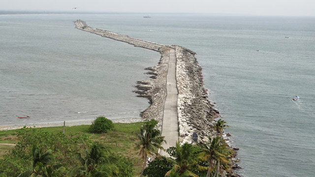

1 / 6
.jpg)
Punalur
2 / 6
.jpg)
jadayu's rock
3 / 6

Thenmala
4 / 6

Neendakara
5 / 6

Chinakkada Clock Tower
6 / 6
Munroe Island
Kollam (erstwhile Quilon) is a southern district of Kerala, located 70 km north of the state’s capital Thiruvananthapuram. It is flanked by the Arabian sea on the west, Tamil Nadu on the east, Alapuzha and Pathanamthitta districts on the north and Thiruvananthapuram district on the south. Housing a population of over 2.6 million, Kollam is one of the more densely peopled districts of India. The head quarters of the district administration is centred at Kollam City, the district’s capital. Administratively, the district is composed of two revenue divisions viz. Kollam and Punalur with three taluks each under them.
Like the rest of Kerala, Kollam is climactically temperate with a generally sunny weather peaking in heat during April-May. The monsoon falls from June to September. The soil is varyingly loamy, laterite and forest at the coastal regions, mainland and the forest areas respectively.
The heart land of Kollam is naturally veined by the Ashtamudi lake, a massive, multi-branched water body, which is also a popular boating attraction for tourists. This and the Kollam canal cutting through the city give Kollam a place of prominence in the waterway systems of the country. A number of islands of varying sizes beautifully spot the vast expanse of the lake. The city is graced by beaches where people go to spend quiet evenings. Kollam also has a considerably large forest cover on its eastern side making home for several eco tourism projects like Shenduruni, Thenmala, Palaruvi etc.
Kollam City boasts of a long history of political, commercial and cultural importance having found mention in several ancient travellers’ accounts. With a varied colonial past under the Portuguese, the Dutch and the British, Kollam has locations of historical importance like the Thangasseri light house, the St. Thomas Fort and cemetery built by the Portuguese, Thevally Palace, Cheenakkottaram etc. Besides, it also is the site of several old buildings constructed by the Travancore kings (its rulers during the pre-Independence times) in a variety of architectural styles, where many government offices still function.
Kollam has been the centre of cashew industry in Kerala from the time of the Portuguese in 16th c. Having hundreds of working cashew factories in the district, Kollam still continues to be the largest processed cashew exporter in India. Neendakara and Thangasseri, the two fishing harbours and ports in Kollam, support a thriving marine industry providing a variety of employment and livelihood to people in large numbers.